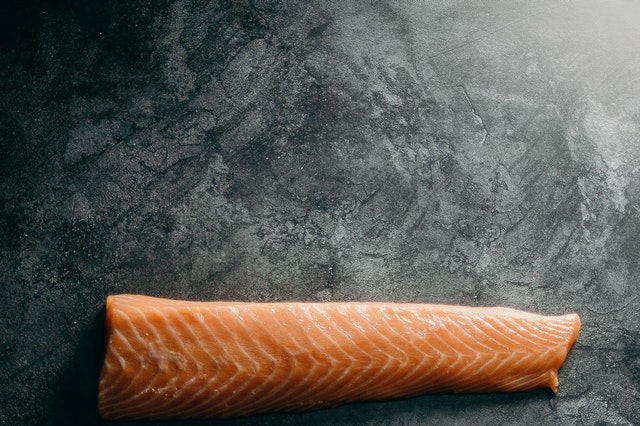
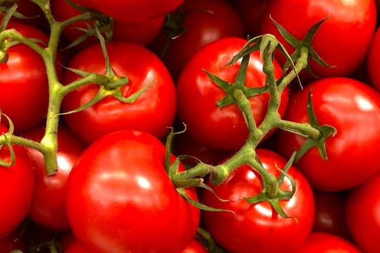
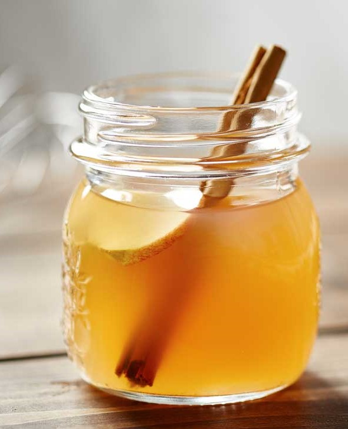

Reducing Risk of Chronic Disease
Impact or benefits of nutritious food on our health
Meat
-

- Salmon (4,123 mg per serving omega3) - Studies show that people who regularly eat fatty fish, such as salmon, have a lower risk of diseases like heart disease, dementia, and depression
- Mackerel (4,107 mg per serving omega3) - are incredibly rich in nutrients — a 3.5-ounce (100-gram) serving packs 200% of the Reference Daily Intake (RDI) for vitamin B12 and 100% for selenium
- Cod liver oil (2,682 mg per serving omega3) - This oil is not only high in omega-3 fatty acids but also loaded with vitamins D and A, with a single tablespoon providing 170% and 453% of the RDIs, respectively.

| Meat | Omega-3 (mg/serving) |
|---|---|
| Salmon | 4,123 |
| Mackerel | 4,107 |
| Cod Liver Oil | 2,682 |
Fruits & Vegetables
- Berries - According to a U.S. Department of Agriculture study, blueberries top the list of antioxidant-rich fruits, followed by cranberries, blackberries, raspberries, and strawberries. The color of berries comesfrom the pigment anthocyanin, an antioxidant that helps neutralize "free radicals" (cell-damaging molecules) that can help lead to chronic diseases, including cancer and heart disease.
- Dark & Leafy Greens - One of the best disease fighting foods is dark, leafy greens, which include everything from spinach, kale, and bok choy to dark lettuces. They are loaded with vitamins, minerals, beta-carotene, vitamin C, folate, iron, magnesium, carotenoids, phytochemicals, and antioxidants.
- Tomatoes - bursting with flavor and lycopene -- an antioxidant that may help protect against some cancers. They also deliver an abundance of vitamins A and C, potassium, and phytochemicals.



Liquids
- Dairy - Dairy foods are not only the best food source of dietary calcium, but also have plenty of protein, vitamins (including vitamin D), and minerals -- key to fighting the disease osteoporosis. The U.S. government's 2005 Dietary Guidelines recommend having three daily servings of low-fat dairy products, as well as doing weight-bearing exercise, to help keep bones strong.
- Apple Cider Vinegar - Research suggests that vinegar offers the following benefits for blood sugar and insulin levels. The most effective and healthiest way to regulate blood sugar levels is to avoid refined carbs and sugar, but apple cider vinegar may also have a beneficial effect.

